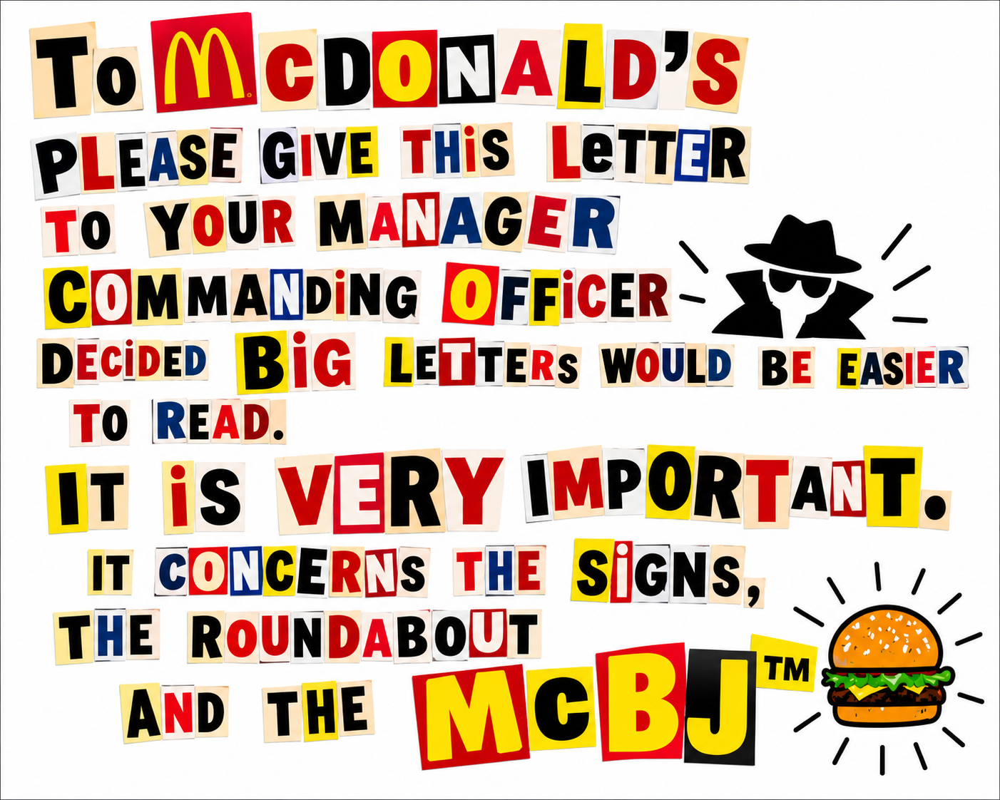
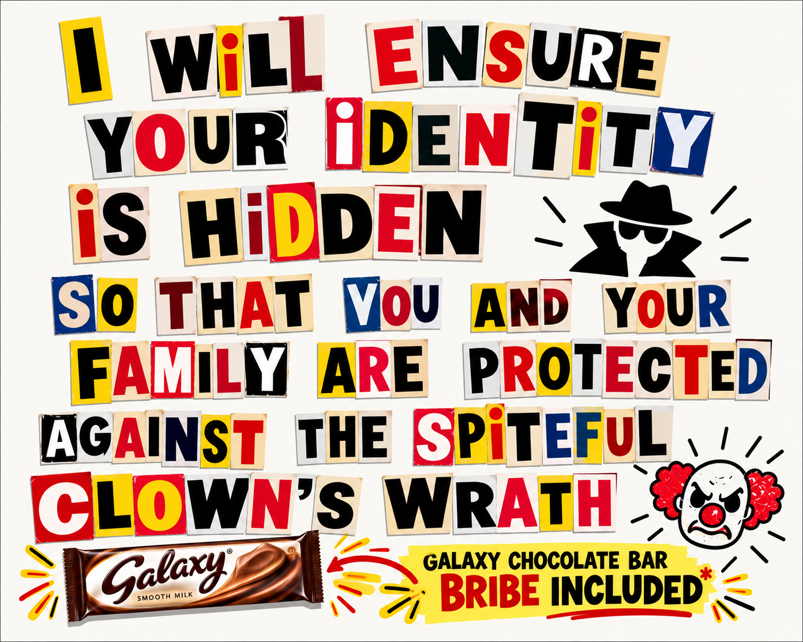
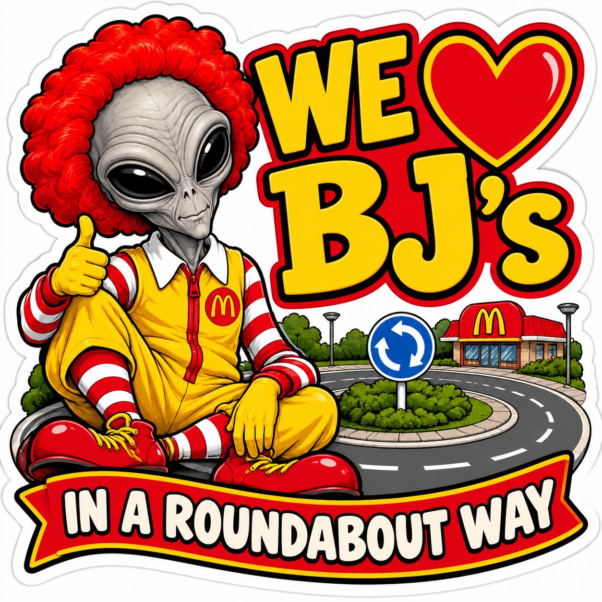

Record of an escalating roadside nutritional dispute
01 // SUMMARY OF INCIDENT
A terrestrial roundabout in the A57 sector has become the focal point of an increasingly elaborate confrontation between two burger-selling establishments. The deployment of promotional signs has been interpreted by the assigned field representative as a form of territorial signalling.
Further signs have appeared. This has not materially improved the situation, but it has provided a surprising quantity of paperwork.
02 // DIPLOMATIC POSITION
Commander Vrax has initiated correspondence intended to avert further escalation. A proposed diplomatic arrangement has been provisionally designated the McBJ™ Peace Initiative. The original signage ceasefire directive, including the McBJ™ Peace Initiative, is now released below.
03 // CURRENT DETERMINATION
High Command considers the matter beneath the normal threshold for interstellar intervention. Unfortunately, Commander Vrax has submitted enough documentation that ignoring it has become administratively more expensive than acknowledging it.
04 // ORIGINAL SIGNAGE CEASEFIRE DIRECTIVE
The complete one-page Veydran High Command directive is reproduced as its original PDF. No retyping or redesign has been applied.
Original official diplomatic communication // McBJ™ Peace Initiative
OPEN PDF ↗ DOWNLOAD ORIGINAL ↓05 // SUPPORTING EXHIBITS
Three additional exhibits from the A57 diplomatic exchange, published as full-resolution original images.






06 // ASSOCIATED DOCUMENT REGISTER
T-00-447/AIncident abstractRELEASEDVEF-A57-002Signage Ceasefire DirectiveRELEASEDVEF-A57-003Delivery note — frontRELEASEDVEF-A57-004Delivery note — reverseRELEASEDVEF-A57-005We Love BJ's artworkRELEASEDDOCUMENT CONTROL OFFICE // TERRAN MIRROR